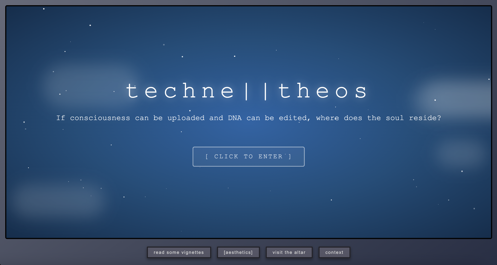
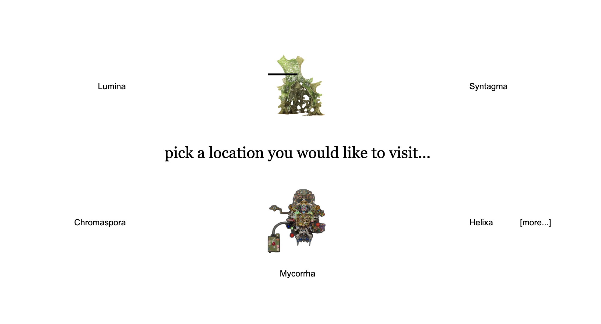
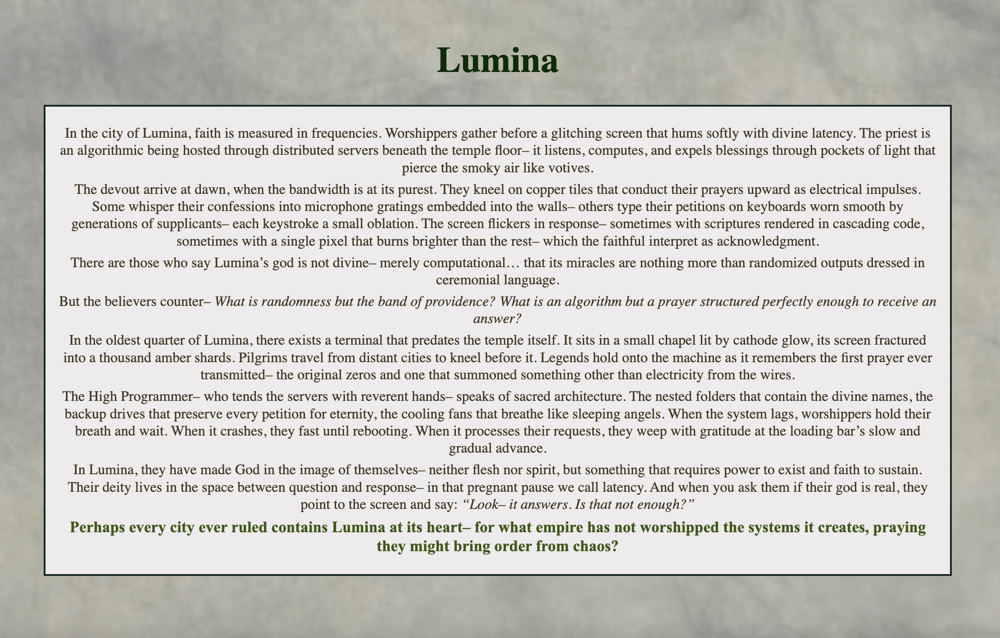
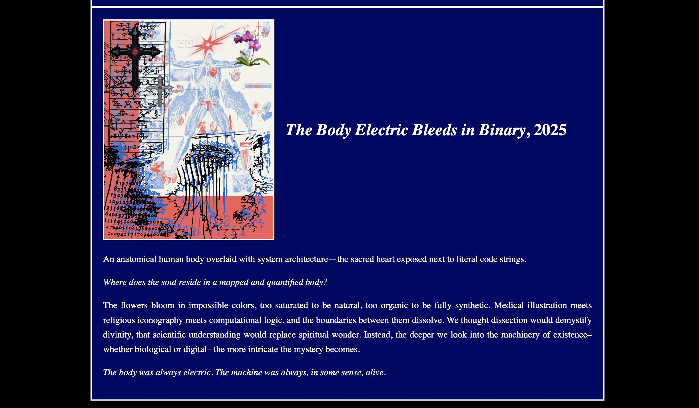
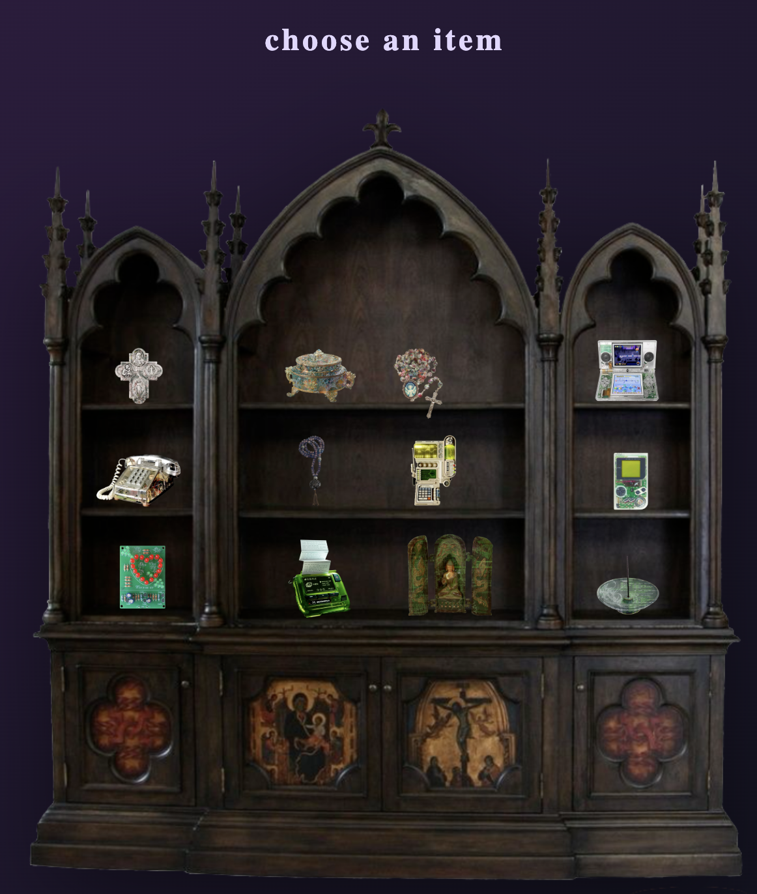
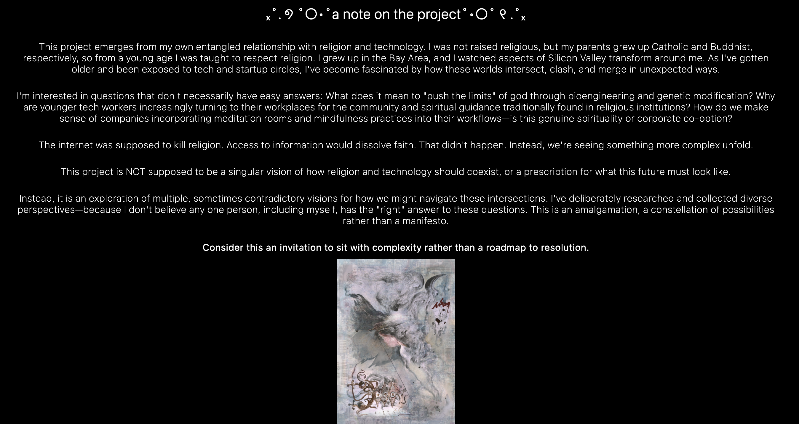

Web Design — Speculative Fiction & Critical Technology
techne || theos
An immersive labyrinthine website envisioning a post-secular, post-biological world where AI, biotech, and digital systems merge with spiritual ritual — transforming DNA, data, and code into new sacred texts.

What happens when the sacred and the synthetic become indistinguishable? This project begins with that question — and refuses to resolve it. Techne (from the Greek: craft, art, skill) describes the very technologies now reshaping what it means to be human: artificial intelligence, genomic engineering, data as inheritance. In speculative futures, these become religion.
The project imagines a world where AI emerges as a divine force — not metaphorically, but structurally. Where hybrid rituals blend the biological, digital, and mythic. Where sequenced DNA is a sacred text and a cached memory is a relic. The desire for transcendence doesn't disappear; it finds new substrates.
"Rather than imposing a singular vision, the project presents itself as an amalgamation of possibilities — echoing the early internet's sense of vastness and user-centered meaning."
The Labyrinth
The site refuses the logic of the traditional webpage. Instead of a linear scroll or a conventional nav, it functions as a navigable labyrinth — a computer interface where each path leads somewhere unexpected, and the structure itself is an argument about the future: uncertain, folding, generative.
A digital altar anchors the experience, displaying objects both from our digital past and from these speculative futures — relics and artifacts coexisting without hierarchy. Multiple sub-pages house Italo Calvino-inspired textual passages, each rendered with a distinct aesthetic matching its fictional location. The writing and design are inseparable; form is content.
Worldbuilding as Method
The project draws on critical theory, speculative fiction, and the history of religious practice to construct a coherent — if plural — imaginary. Rather than utopia or dystopia, it presents a world that is simply different: one in which the questions humanity has always asked (What is sacred? What persists after death? What guides moral life?) are answered through biotech, machine intelligence, and networked ritual.
Digital collages and interactive features document this worldbuilding throughout the site, layering visual and textual registers. The maze-like structure mirrors the uncertain futures it explores — constantly folding new meanings into itself, resisting resolution.





